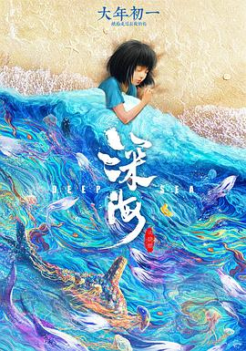

深海
又名：深海之驭海人 / Deep Sea
乖乖，粒子水墨真的厉害。故事的重心一开始有些不明确，到后来就好点了。至于满分是因为“我不用再低声下气，你呢，也不必过分懂事，到那个时候，不再为别人活着。”这句话。摄影也很棒。
作品信息
| 导演 | 田晓鹏 |
| 编剧 | 田晓鹏 / 田博 |
| 主演 | 苏鑫 / 王亭文 / 滕奎兴 / 杨婷 / 吉静 / 郭浩然 / 田晓鹏 / 董一 / 方韬辰 |
| 类型 | 动画 / 奇幻 |
| 制片国家/地区 | 中国大陆 |
| 语言 | 汉语普通话 |
| 上映日期 | 2023-01-22(中国大陆) |
| 片长 | 112分钟 |
| IMDb | tt25434854 |
说过什么
2023-04-08 22:36:41
广播 · 看过 · ★★★★★
乖乖，粒子水墨真的厉害。故事的重心一开始有些不明确，到后来就好点了。至于满分是因为“我不用再低声下气，你呢，也不必过分懂事，到那个时候，不再为别人活着。”这句话。摄影也很棒。
最后一次看到是 2026-10-07T23:13:56+08:00 · 豆瓣原页